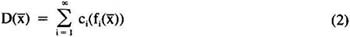
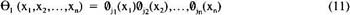

by Abraham Kandel
CRC Press, CRC Press LLC
ISBN: 084934297x Pub Date: 11/01/91
|
|
Fuzzy Expert Systems
by Abraham Kandel CRC Press, CRC Press LLC ISBN: 084934297x Pub Date: 11/01/91 |
| Previous | Table of Contents | Next |
The classification method can operate on fuzzy data as well as crisp data. The nature of the data is determined in the problem definition phase. The algorithm itself operates directly on either categorical or continuous variables. However, the categorical variables must have an ordering. The decision in the two-category case is obtained by substituting the values for the feature vector into the equation for the hypersurface. If the result is positive, category I is assumed, negative implies category 2, and a value of zero is inconclusive. However, rather than interpreting the result as a crisp decision, the relative absolute magnitude can be considered as a degree of membership in the category. The classification method can be extended to the multicategory case in two ways. The most direct approach is to obtain hypersurfaces for all combinations of classes, although this method results in a combinational explosion if a large number of classes are involved. Alternately, a hypersurface value can be computed for each category, with classification assigned to the class yielding the highest numerical value.
This method has been applied to a number of medical applications,38-47 although it is generally applicable to any type of data. It will be illustrated here in a medical application: a multicategory problem involving classification of exercise testing data to determine the extent of coronary artery disease.
In the next section, details of the classification method are given. In the following sections, the method is illustrated in conjunction with the application just described.
The classification method is based on the potential function approach to decision function generation. The multivariant potential function is defined by:
where are orthonormal functions,  and are n-dimensional feature vectors, and λi, i = 1,2, . . . are real numbers. The equation which represents the decision hypersurface is
and are n-dimensional feature vectors, and λi, i = 1,2, . . . are real numbers. The equation which represents the decision hypersurface is

where ci, i = 1,2, . . . are unknown weighting factors determined in an interative procedure using the training set. For a two-class problem, the decision is made according to:
The iterative procedure works in the following manner. The basic iterative equation is
where is assumed to be zero, and:
where w1 represents class 1 and w2 represents class 2. For the two-class problem:
It then remains to choose the orthogonal function . In previous work of the authors,38 a new class of one-dimensional Cohen orthogonal polynomials were used. The general form of this polynomial is
where
The recurrence relation for this polynomial is
The orthogonal relationship is
Multidimensional orthogonal polynomials were then generated using the expression:

where (x) is the one-dimensional orthogonal polynomial defined in Equation 7.  is then defined by:
is then defined by:
where m is the degree of the resulting hypersurface and determined experimentally.
It should be noted that the polynomials used are orthogonal, rather than orthonormal. This is permitted since all comparisons are made to zero, and the normalizing constant serves only as a scaling device and does not affect the class decision.
In the method described, computational complexity is reduced by the use of the new multidimensional polynomial developed by Cohen. It takes the form:

where m is the dimensionality of the data, a(n,ip),ip = 1,...k are parameters which may be arbitrarily selected, A is the normalization constant, and vi,i = 1, . . . ,m are assigned values corresponding to the components of the first feature vector.
In this chapter, we make the assumption a(n,ip) = 1. is then defined by:
where  are the components of the Cohen polynomials, which themselves form an orthogonal set:
are the components of the Cohen polynomials, which themselves form an orthogonal set:
where B is the normalization constant.
The pattern recognition method described in Section II. is implemented on the VAX 11/750 computer. It is written in FORTRAN 77 and contains a number of features to facilitate its use. Figure I shows a systems diagram.
This program allows the user to input the format of the new data file, and then reformats it in accordance with the format expected by the pattern recognition programs. At this stage, the user indicates the number of possible parameters, the number of classes into which the data should be divided, and the variable which determines the classification. A disk file is then written to be used by the training set selector.
This program creates the training set by starting with two randomly selected feature vectors and adding additional vectors one at a time. At each stage, the training set is tested to make sure that separation occurs. The user can indicate the size of the training set desired. Its size usually falls between one third and one half of the available pattern vectors.
| Previous | Table of Contents | Next |